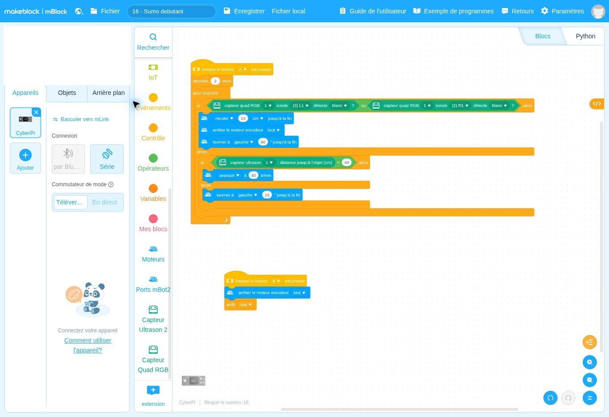

lorsque le bouton B ▾ est presséDépart
Ce que fait ce bloc : Départ du bouton d’arrêt.
Pourquoi il est là : Le robot doit pouvoir être stoppé immédiatement.
Pourquoi la sortie de l’arène doit-elle être traitée en premier ?
Le robot reste dans une arène noire. S’il touche le bord blanc, il recule et tourne. Sinon, il cherche un adversaire avec son capteur ultrason : s’il en voit un à moins de 40 cm, il fonce ; sinon il pivote un peu et cherche encore.
Un programme mBlock est un empilement de blocs, à lire de haut en bas. Chaque bloc a une couleur qui indique son rôle. Voici chaque bloc de cette fiche, dans l’ordre, expliqué simplement.
DépartContrôleAction du robotInformationÉcranMémoireCalcul
Les couleurs ci-dessous sont proches de celles de mBlock. Les blocs sont redessinés ici pour être lisibles ; la vraie capture d’écran est plus bas.
Ce que fait ce bloc : Départ du bouton d’arrêt.
Pourquoi il est là : Le robot doit pouvoir être stoppé immédiatement.
Ce que fait ce bloc : Coupe les moteurs.
Pourquoi il est là : Le robot s’arrête.
Ce que fait ce bloc : Arrête tous les scripts.
Pourquoi il est là : Sinon la boucle principale relancerait les moteurs.
Ce que fait ce bloc : Bloc de départ : le programme se lance quand on appuie sur le bouton A du CyberPi, comme dans les fiches précédentes.
Pourquoi il est là : Vous choisissez le moment du départ.
Ce que fait ce bloc : Attend 2 secondes avant de commencer.
Pourquoi il est là : Laisse le temps de retirer les mains et de poser le robot dans l’arène. Cette attente n’a lieu qu’une seule fois.
Ce que fait ce bloc : Répète sans fin les décisions à l’intérieur.
Pourquoi il est là : Le robot réfléchit en permanence.
Ce que fait ce bloc : Première décision (prioritaire) : SI la sonde gauche OU la sonde droite voit du blanc, ALORS le robot est au bord de l’arène et doit réagir ; SINON, il cherche l’adversaire.
Pourquoi il est là : Sortir de l’arène fait perdre : la sécurité passe avant l’attaque. La condition du bord est donc testée AVANT tout le reste.
Dans ce bloc, il y a :
Mot à connaître. Une « priorité » est la décision qu’on examine avant toutes les autres.
Ce que fait ce bloc : Recule de 10 cm.
Pourquoi il est là : On s’éloigne du bord.
Ce que fait ce bloc : Coupe les moteurs.
Pourquoi il est là : On s’immobilise avant de tourner.
Ce que fait ce bloc : Tourne d’un quart de tour.
Pourquoi il est là : On se remet face au centre de l’arène.
Ce que fait ce bloc : Le robot n’est pas au bord : il peut chercher un adversaire.
Pourquoi il est là : Seulement si la première décision est négative.
Ce que fait ce bloc : Deuxième décision : un objet est-il à moins de 40 cm ?
Pourquoi il est là : Si oui, on a trouvé l’adversaire ; sinon on continue de chercher.
Ce que fait ce bloc : Fonce vers l’objet détecté.
Pourquoi il est là : Attaque ! La vitesse est plus élevée que d’habitude.
Ce que fait ce bloc : Aucun adversaire à moins de 40 cm.
Pourquoi il est là : Il faut continuer à chercher.
Ce que fait ce bloc : Pivote un petit peu.
Pourquoi il est là : Le robot balaie l’arène en tournant par petits pas, comme un phare, jusqu’à voir l’adversaire.
C’est exactement ce que fait le programme, écrit avec des phrases. Les lignes décalées vers la droite sont à l’intérieur d’une répétition ou d’un choix.
Quand j’appuie sur A :
1. j’attends 2 secondes ;
2. je répète sans fin :
si une sonde (L1 ou R1) voit du blanc :
je recule de 10 cm ; j’arrête les moteurs ; je tourne de 90° ;
sinon :
si un objet est à moins de 40 cm :
j’avance à 40 tr/min ;
sinon :
je tourne de 15°.
Quand j’appuie sur B :
j’arrête les moteurs et tous les scripts.Retrouvez dans cette capture les blocs expliqués ci-dessus. Vous pouvez aussi ouvrir le fichier dans mBlock pour le tester et le modifier.

Autres solutions : voir la page Dépannage. Ces fiches n’ont pas été testées avec un robot réel : vos observations peuvent différer légèrement.
Pour être sûr d’avoir compris, changez un seul élément, prévoyez le résultat, puis vérifiez avec le robot.